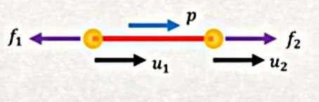
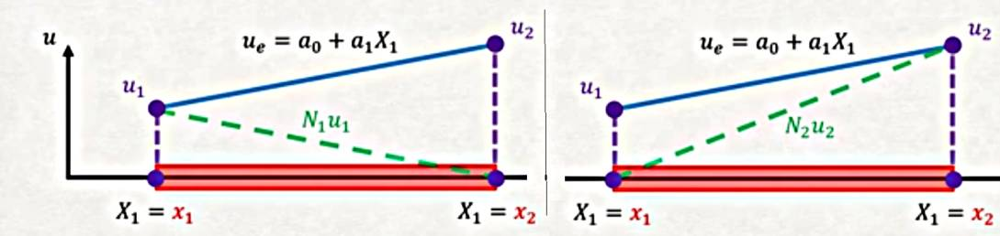
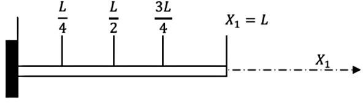

Sonlu Öğeler Metotu (Finite Elements Method -FEM-) - 2
Önceki örnekler standart eni değişmeyen kiriş yapısını temel aldı. Fakat ya kiriş alttaki gibi olsaydı?

Bu kirişi temsilen
$$ E I \frac{\mathrm{d}^4 y}{\mathrm{d} X_1^4} = q $$
diferansiyel denklemini hala kullanabilir miyiz? Dikkat edersek en değiştiğine göre $X_1$ ile beraber, ona bağlı olarak, atalet momenti $I$ sabit değil, değişken demektir.. Bazıları düşünebilir "ama o zaman değişken $I$'yi alırız, üstteki denklemdeki $I$'ya sokarız olur biter". Bunu yapamayız çünkü $I$'nin sabit olması üstteki denklemi türetmek için bir önkabuldu, yani $I$ değişken ise üstteki denklemi kullanmak mümkün değildir [1, Ders 4].
Problem şu ki pek çok gerçek dünya uygulaması üstteki Euler-Bernoulli kiriş formülüne erişirken kullandığımız faraziyelere uymaz, bunları hatırlarsak lineer elastiklik, yok sayılabilecek Poisson etkileri, düzlemlerin düz kalması idi. Fakat mesela beton materyelini ele alalım, bu materyel ucuzdur, basınca, yani içe doğru strese karşı çok dayanıklıdır, ki bu yüzden pek çok yapıda kullanılır, fakat beton dışa doğru stres, yani gerilime karşı dayanıklı değildir. Çok az bir yükü bile beton parçaya dışa doğru uygulasam çatlamaya başlar, çatlamak demek oradaki yüzeyin bozulmaya uğraması demektir, ki dolaylı olarak $I$ değişecektir. Diğer bir problem yüke bağlı olarak betonun $E$ değerinin de değişmesi. Yani gerçek dünyada $I$ neredeyse hiçbir zaman sabit değildir, $E$ benzer şekilde, durumu daha kötü yapan bu değişimlerin çoğunlukla yük $q$ değerine bağlı olması. Bu tüm hesapları arap saçına döndürür.
Problemin çözümü FEM yaklaşımında. Nasıl? Çünkü eğer bir kirişi yeterince ufak parçalara bölebilirsem o parçalarda $I$, ve $E$ sabit kabul edebilirim ve bu parçalarda daha basit olan denklemleri kullanabilirim. FEM matematiği bana bu parçaları birleştirmem için güzel bir mekanizma sağlıyor zaten.

Üstteki resimdeki yeşil bölgeyi düşünelim, o bölgenin iki yan yüzeylerini düşünürsek, belki soldan sağa giderken biraz değişim olur ama parça çok ufak olduğu için bu değişim fazla değildir.
FEM maceramıza çubuk/makaskiriş (bar/truss) öğeleri ile devam edeceğiz. Bu yapılar çok basit olmalarına rağmen FEM metadolojisini gösterebilmeleri açısından uygunlar. Onları sadece küçülme, esneme açısından inceleyeceğiz, moment, kaykılma gibi konuları şimdilik yok sayacağız. Fakat işleyeceğimiz pek çok yaklaşım, "direngenlikleri (stiffness)" hesaplarken kullandığımız adımlar her FEM yaklaşımında faydalı olan kavramlar.
Not düşelim, önceki FEM çözümü Galerkin yaklaşımı ile tüm denkleme analitik bir çözüm buldu. Bu derste ve gerisinde göreceğimiz türden FEM, Galerkin çözümünü her parçaya uygulayıp ayrıksal sonuçları birleştiriyor.

Makaskiriş üstteki gibi olsun, onu parçalara bölelim, sarı noktalar düğümler (nodes), düğümleri birleştiren öğeler (elements) var. Bu yaklaşımda yer değişimleri tüm nesne için değil, her düğümde hesaplayacağız. Yer değişimleri birbiriyle bağlayan şeyler ögeler, kırmızı ile görülen parçalar. Bu öğe parçaları aslında bir aradeğerlemeyi (interpolation) temsil ediyor olacaklar, eğer iki düğümün yer değişimini biliyorsam onları bağlayan parçanın yer değişimini bunları kullanarak, aradeğerleme yaparak hesaplayabilirim.
Eğer tek bir öğeye bakarsak,

Yer değişimler her düğüm için demiştik, $u_1,u_2$, amacımız onları hesaplamak. Eğer bu değişimleri hesaplayabilirsem, daha önce belirttiğimiz gibi, aradaki öğenin yer değişimini yaklaşık olarak, iki uca bağlı olarak hesaplayabilirim. Yani eğer düğümlerin her değişimini biliyorsam her şeyin yer değişimini biliyorum demektir.
Galerkin metotuna başlayalım. Metot uygulanınca bize yer değişimleri için bir direngenlik matrisi ve öğeler için düğümsel kuvvet vektörü vermeli. Her şey düğümlerde hesaplanıyor dedik, peki sisteme dağıtık bir yük uygulanıyorsa ne yapacağız? Bu tür kuvvetlerin düğümler arasında etkili olduğunu biliyoruz, o zaman bu tür kuvvetleri $x,y,z$ bileşenlerine ayırıp onları düğümlere etkili vektörler haline getirebilirim.
Ana denklemle başlarsak,
$$ E A \frac{\mathrm{d}^2 y}{\mathrm{d} X_1^2} = -p $$
Artıksal (residual) hesap şöyle,
$$ R = EA \frac{\mathrm{d}^2 u}{\mathrm{d} X_1^2} + p $$
Bu artığın tanım bölgesi üzerinden ağırlıklı entegralinin sıfır olmasını istiyoruz,
$$ \int_\Omega R N_i \mathrm{d} x = 0 $$
Dikkat, daha önce ağırlık $W_i$ kullanmıştık, şimdi $N_i$ var, bu fonksiyonlar her düğümde tanımlı şekil fonksiyonu (shape function) olacak. O şekillerin ne seçildiği FEM'in ana özelliklerinden, detayları göreceğiz.. Şimdi $R$'yi açıp düzenleme yaparsak,
$$ \int _{0}^{L} \left( EA \frac{\mathrm{d}^2 u}{\mathrm{d} X_1^2} + p \right) N_i \mathrm{d} X_1 = 0 $$
$$ \int {0}^{L} \left( EA \frac{\mathrm{d}^2 u}{\mathrm{d} X_1^2} \right) N_i \mathrm{d} X_1 = - \int {0}^{L} p N_i \mathrm{d} X_1 $$
Parçalı Entegral tekniğini uygulayalım,
$$ \int {0}^{L} EA \left( \frac{\mathrm{d}^2 u}{\mathrm{d} X_1^2} \right) N_i \mathrm{d} X_1 = \left( EA \frac{\mathrm{d} u}{\mathrm{d} X_1} N_i \right) \bigg\vert{X_1=0}^{X_1=L} - \int_{0}^{L} EA \left( \frac{\mathrm{d} u}{\mathrm{d} X_1} \right) \left( \frac{\mathrm{d} N_i}{\mathrm{d} X_1} \right) \mathrm{d} X_1 = - \int _{0}^{L} p N_i \mathrm{d} X_1 $$
Ekşi işaretler olmasın diye birkaç yer değişimi yapalım,
$$ \int_{0}^{L} EA \left( \frac{\mathrm{d} u}{\mathrm{d} X_1} \right) \left( \frac{\mathrm{d} N_i}{\mathrm{d} X_1} \right) \mathrm{d} X_1 = \left( EA \frac{\mathrm{d} u}{\mathrm{d} X_1} N_i \right) \bigg\vert_{X_1=0}^{X_1=L} + \int _{0}^{L} p N_i \mathrm{d} X_1 $$
Eşitliğin sağındaki birinci terime dikkat edelim, orada fiziksel anlamı olan bir ilişki görüyor muyuz? $EA$ çarpı $\mathrm{d} u / \mathrm{d} x$.. Tanıdık geliyor mu? O ifade aslında bir kuvvet değil mi? Çünkü hatırlarsak $\mathrm{d} u / \mathrm{d} x$ yer değişimin türevi, ki bu gerilme, gerilmeyi Young Genliği $E$ ile çarpınca stres elde ederim. Ek olarak $A$ ile alan çarpımı var, stres kuvvet bölü alan olduğu için stresi alanla çarpınca geriye kuvvet kalır. Demek ki o terimle eksenel kuvvet elde ediyorum, bir düğümde konsantre edilmiş $f = E A \epsilon$ kuvvetini hesaplıyorum.
Bu mantık zinciriyle devam edersem üstteki kuvvet bir düğümdeki kuvveti gösteriyor ve bu kuvvetin dışarıdan uygulandığı hali temsil ediyor. Hem yanındaki düğümde bu kuvveti dengeleyen karşı bir kuvvet olacaktır ve bu kuvvetler birbirini iptal edecektir. O zaman eşitliğin sağındaki ilk terim iptal edilebilir.
O terimi iptal etmeden hesapları yapabilirdik fakat sonuç aynı çıkardı. Fakat ekstra, gereksiz hesapları önceden çıkartmak hesap zamanımızı kısaltacağı için iptali şimdiden yapmak bizim için iyi olacak. Neyse, iptal sonrası geriye kalanlar
$$ \int_{0}^{L} EA \left( \frac{\mathrm{d} u}{\mathrm{d} X_1} \right) \left( \frac{\mathrm{d} N_i}{\mathrm{d} X_1} \right) \mathrm{d} X_1 = \int _{0}^{L} p N_i \mathrm{d} X_1 $$
Şimdi $N_i$ fonksiyonlarına gelelim, onlara şekil fonksiyonları demiştik. Bu şekiller neye benziyor, ne için kullanılıyorlar?
Diyelim ki bir çubuğa bakıyorum ve onun üzerinde iki tane düğüm tanımladım, düğümlerden biri $X_1 = x_1$ noktasında diğeri $X_2 = x_2$ noktasında.

Ve yine diyelim ki bu iki düğümdeki yer değişimi $u_i$ değerlerini biliyorum, eldeki örnek için $u_1$ ve $u_2$, kabaca alttaki gibi olsun,

Şekle gelelim; eğer bu iki düğüm üzerinden bir lineer bağlantı kullanmak istiyorsam yani iki düğüm arasında aradeğerleme yapacak fonksiyon lineer olsun diyorsam, yapılacak olan bariz aslında,

Aradeğerleme $u_e$ bu şekilde. Peki o fonksiyonda bilinmeyen $a_0,a_1$ nasıl bulunacak? Biz nihai sonuç olarak bu katsayılarla ilgilenmiyoruz, bizi tek ilgilendiren yer değişim fonksiyonu, bunu belirtmiştik. O zaman üstteki fonksiyonu $u_1,u_2$ temelli olarak tekrar yazabilir miyiz acaba? Eğer $x_1$ noktasında fonksiyon değeri $u_1$, $x_2$ noktasında $u_2$ ise,
$$ u(x_1) = a_0 + a_1 x_1 = u_1 $$
$$ u(x_2) = a_0 + a_1 x_1 = u_2 $$
İki bilinmeyen var, iki denklem var, çözüm
$$ a_0 = \frac{u_2 x_1 - u_1 x_2}{L}, \qquad a_1 = \frac{u_2 - u_1}{L} $$
$L$ kırmızı ile gösterilen parçanın uzunluğu sadece, yani $x_2 - x_1$.
$a_0,a_1$ degerlerini $u_e$ icine koyunca,
$$ u = \frac{u_2 x_1 - u_1 x_2}{L} - \frac{u_2 - u_1}{L} X_1 $$
Biraz daha cebirsel değiştirme sonrası
$$ u = \frac{(x_2 - X_1)}{L} u_1 + \frac{(X_1 - x_1)}{L} u_2 $$
Bu son değişimi yaptık çünkü bu formda dikkat edersek denklem daha önce gördüğümüz Galerkin deneme fonksiyonlarına benziyor,
$$ u = u_1 \phi_1(X_1) + u_2 \phi_2 (X_1) $$
kalıbında görüldüğü gibi. Deneme fonksiyonlarında $u_1,u_2$ sabit değerlerdi, bu bölümde gördüğümüz $u_i$ değerleri de öyle aslında. Bilinen $u_i$ değerlerini yaklaşık temsile uğraşıyoruz, gerçi çözüm mekaniği içinde o $u$ değerleri de hesaplanıyor fakat bu belli formülasyonlar için onların bilindiği farzedilebilir.
Şimdi $\phi_1,\phi_2$ fonksiyonları bizim önceden seçtiğimiz fonksiyonlardı, polinom seçtiğimizde $X_1,X_1^2$ gibi hesaplar kullandık. Üstteki türetim sonrası $N_1,N_2$ var, ve ulaştığımız fonksiyonlar
$$ N_1 = \frac{(x_2 - X_1)}{L}, \quad N_2 = \frac{(X_1 - x_1)}{L} $$
Bu şekil fonksiyonları neye benziyor acaba? Alttaki gibi,

Bu iki fonksiyonu üst üste koyduğumuzda (superimpose) yani topladığımızda, sonucun mavi çizgiyi aynen vereceğini görebilirdik.
İlginç bir diğer özellik, eğer mesela $N_2$'ye tek başına bakarsam, onun ilk düğümde 0 değerinde, ikinci düğümde 1 değerinde olduğunu görebiliriz. Eğer $N_3$ olsa bu şekil de birinci ve ikinci düğümde sıfır olurdu. Diğer yandan her şekil fonksiyonu ait olduğu düğümde 1 değerindedir. $N_1$ birinci düğümde 1 değerinde, $N_2$ ikinci düğümde 1 değerinde, vs. Bu şekil fonksiyonları öyle tasarlanmıştır.
Şapka fonksiyonlarını ifade etmenin daha genel bir yöntemi [2, sf. 9], ki $h = x_{j+1}-x_j$, ya da 1 uzunluğundaki bir yatay eksen için $h = 1/N$ ve $j = 1,2,...,N$ olmak üzere,
$$ N_1 = \left\{ \begin{array}{rr} (x_2 - X_1)/h, & x_1 \le X_1 \le x_2,\\ 0, & \textrm{diğer} \end{array} \right. $$
$$ N_j = \left\{ \begin{array}{rr} (X_1 - x_{j-1})/h, & x_{j-1} \le X_1 \le x_j,\\ (x_{j+1} - X_1)/h, & x_j \le X_1 \le x_{j+1},\\ 0, & \textrm{diğer} \end{array} \right. $$
$$ N_{N+1} = \left\{ \begin{array}{rr} (X_1 - x_N)/h, & x_N \le X_1 \le x_{N+1},\\ 0, & \textrm{diğer} \end{array} \right. $$

Daha önceki örnekte iki parça kullanılmıştı, bu parçaları arttırırsak daha gerçek probleme yaklaşırız, dört parça kullanalım [3], çubuk uzunluğu $L$, o zaman $h = L/4$ olur, baz / şekil fonksiyonları alttaki noktalarda tanımlı,

$$ N_1 = \left\{ \begin{array}{rr} X_1 / h & 0 \le X_1 \le L/4 \\ (L/2 - X_1) / h & L/4 \le X_1 \le L/2 \end{array} \right. $$
$$ N_2 = \left\{ \begin{array}{rr} (X_1 - L/4)/h & L/4 \le X_1 \le L/2 \\ (3L/4 - X_1)/h & L/2 \le X_1 \le 3L/4 \end{array} \right. $$
$$ N_3 = \left\{ \begin{array}{rr} (X_1-L/2)/h & L/2 \le X_1 \le 3L/4 \\ (L-X_1)/h & 3L/4 \le X_1 \le L \end{array} \right. $$
$$ N_4 = (X_1 - 3L/4) / h $$
Böylece alttaki fonksiyonları yaratmış olduk,

Şekil fonksiyonlarının türevleri oldukca basit,
$$ \frac{\mathrm{d} N_1}{\mathrm{d} X_1} = \left\{ \begin{array}{rr} 4/L & 0 \le X_1 \le L/4 \\ -4/L & L/4 \le X_1 \le L/2 \end{array} \right. $$
$$ \frac{\mathrm{d} N_2}{\mathrm{d} X_1} = \left\{ \begin{array}{rr} 4/L & L/4 \le X_1 \le L/2 \\ -4/L & L/2 \le X_1 \le 3L/4 \end{array} \right. $$
$$ \frac{\mathrm{d} N_3}{\mathrm{d} X_1} = \left\{ \begin{array}{rr} 4/L & L/2 \le X_1 \le 3L/4 \\ -4/L & 3L/4 \le X_1 \le L \end{array} \right. $$
$$ \frac{\mathrm{d} N_4}{\mathrm{d} X_1} = 4/L $$
Artık $N_i$, onun türevleri için bir tanıma sahibiz, hesaplamaya başlayabiliriz. Genel FEM formülasyonunda en son alttaki noktaya gelmiştik,
$$ \int_{0}^{L} EA \left( \frac{\mathrm{d} N_i}{\mathrm{d} X_1} \right) \left( \frac{\mathrm{d} u}{\mathrm{d} X_1} \right) \mathrm{d} X_1 = \int _{0}^{L} p N_i \mathrm{d} X_1 $$
$p = cX_1$ olarak kabul edelim,
$$ \int_{0}^{L} EA \left( \frac{\mathrm{d} N_i}{\mathrm{d} X_1} \right) \left( \frac{\mathrm{d} u}{\mathrm{d} X_1} \right) \mathrm{d} X_1 = \int _{0}^{L} N_i c X_1 \mathrm{d} X_1 \qquad (1) $$
Üstteki formülü kullanarak 4 tane denklem ortaya çıkartabiliriz.
1)
$N_1$ formülü $0 \le X_1 \le L/2$ harici diğer her yerde yokolur, ki o aralıkta $N_3,N_4$ geçerli değildir. O zaman ilk denklemimiz
$$ u = u_1 N_1 + u_2 N_2 $$
Onun türevi
$$ \frac{\mathrm{d} u}{\mathrm{d} X_1} = u_1 \frac{\mathrm{d} N_1}{\mathrm{d} X_1} + u_2 \frac{\mathrm{d} N_2}{\mathrm{d} X_1} $$
İlk denklem için (1) formülü
$$ \int_{0}^{L} EA \left( \frac{\mathrm{d} N_1}{\mathrm{d} X_1} \right) \left( \frac{\mathrm{d} u}{\mathrm{d} X_1} \right) \mathrm{d} X_1 = \int _{0}^{L} N_1 c X_1 \mathrm{d} X_1 $$
Bunun içine iki üstteki formülü koyunca ve entegral sınırlarını ayarladıktan sonra
$$ u_1 \int_{0}^{L/2} EA \frac{\mathrm{d} N_1}{\mathrm{d} X_1} \frac{\mathrm{d} N_1}{\mathrm{d} X_1} \mathrm{d} X_1 + u_2 \int_{0}^{L/2} EA \frac{\mathrm{d} N_1}{\mathrm{d} X_1} \frac{\mathrm{d} N_2}{\mathrm{d} X_1} \mathrm{d} X_1 = \int_{0}^{L/2} N_1 c X_1 \mathrm{d} X_1 $$
İkinci entegral teriminin alt sınırını daha yukarı çekebiliriz $\frac{\mathrm{d} N_2}{\mathrm{d} X_1}$ hesabının sıfır olduğu yerler var,
$$ u_1 \int_{0}^{L/2} EA \frac{\mathrm{d} N_1}{\mathrm{d} X_1} \frac{\mathrm{d} N_1}{\mathrm{d} X_1} \mathrm{d} X_1 + u_2 \int_{L/4}^{L/2} EA \frac{\mathrm{d} N_1}{\mathrm{d} X_1} \frac{\mathrm{d} N_2}{\mathrm{d} X_1} \mathrm{d} X_1 = \int_{0}^{L/2} N_1 c X_1 \mathrm{d} X_1 $$
2)
$N_2$ formülü $L/4 \le X_1 \le 3L/4$ harici her yerde yokolur, bu aralıkta ise $N_4$ mevcut değildir, yani
$$ u = u_1 N_1 + u_2 N_2 + u_3 N_3 $$
$$ \frac{\mathrm{d} u}{\mathrm{d} X_1} = u_1 \frac{\mathrm{d} N_1}{\mathrm{d} X_1} + u_2 \frac{\mathrm{d} N_2}{\mathrm{d} X_1} + u_3 \frac{\mathrm{d} N_3}{\mathrm{d} X_1} $$
Üstteki sonuçları (1) içine koyarsak,
$$ u_1 \int_{L/4}^{3L/4} EA \frac{\mathrm{d} N_2}{\mathrm{d} X_1} \frac{\mathrm{d} N_1}{\mathrm{d} X_1} \mathrm{d} X_1 + u_2 \int_{L/4}^{3L/4} EA \frac{\mathrm{d} N_2}{\mathrm{d} X_1} \frac{\mathrm{d} N_2}{\mathrm{d} X_1} \mathrm{d} X_1 + u_3 \int_{L/4}^{3L/4} EA \frac{\mathrm{d} N_2}{\mathrm{d} X_1} \frac{\mathrm{d} N_3}{\mathrm{d} X_1} \mathrm{d} X_1 = \int_{L/4}^{3L/4} N_2 c X_1 \mathrm{d} X_1 $$
Üçüncü entegral teriminin alt sınırını güncelleyebiliriz,
$$ u_1 \int_{L/4}^{3L/4} EA \frac{\mathrm{d} N_2}{\mathrm{d} X_1} \frac{\mathrm{d} N_1}{\mathrm{d} X_1} \mathrm{d} X_1 + u_2 \int_{L/4}^{3L/4} EA \frac{\mathrm{d} N_2}{\mathrm{d} X_1} \frac{\mathrm{d} N_2}{\mathrm{d} X_1} \mathrm{d} X_1 + u_3 \int_{L/2}^{3L/4} EA \frac{\mathrm{d} N_2}{\mathrm{d} X_1} \frac{\mathrm{d} N_3}{\mathrm{d} X_1} \mathrm{d} X_1 = \int_{L/4}^{3L/4} N_2 c X_1 \mathrm{d} X_1 $$
3)
$N_3$ formülü $L/2 \le X_1 \le L$ harici her yerde yokolur, o bölümde $N_1$ sıfırdır.
$$ u = u_2 N_2 + u_3 N_3 + u_4 N_4 $$
$$ \frac{\mathrm{d} u}{\mathrm{d} X_1} = u_2 \frac{\mathrm{d} N_2}{\mathrm{d} X_1} + u_3 \frac{\mathrm{d} N_3}{\mathrm{d} X_1} + u_4 \frac{\mathrm{d} N_4}{\mathrm{d} X_1} $$
O zaman üçüncü denklem için (ve sınır güncellemesi sonrası)
$$ u_2 \int_{L/2}^{3L/4} EA \frac{\mathrm{d} N_3}{\mathrm{d} X_1} \frac{\mathrm{d} N_2}{\mathrm{d} X_1} \mathrm{d} X_1 + u_3 \int_{L/2}^{L} EA \frac{\mathrm{d} N_3}{\mathrm{d} X_1} \frac{\mathrm{d} N_3}{\mathrm{d} X_1} \mathrm{d} X_1 + u_4 \int_{3L/4}^{L} EA \frac{\mathrm{d} N_3}{\mathrm{d} X_1} \frac{\mathrm{d} N_4}{\mathrm{d} X_1} \mathrm{d} X_1 = \int_{L/2}^{L} N_3 c X_1 \mathrm{d} X_1 $$
4)
$3L/4 \le X_1 \le L$ harici her yerde $N_4$ yokolur, o aralıkta $N_1$ ve $N_2$ yokolur. Son denklem için
$$ u = u_3 N_3 + u_4 N_4 $$
$$ \frac{\mathrm{d} u}{\mathrm{d} X_1} = u_3 \frac{\mathrm{d} N_3}{\mathrm{d} X_1} + u_4 \frac{\mathrm{d} N_4}{\mathrm{d} X_1} $$
Bu denklem için de (yine sınır güncellemesi sonrası)
$$ u_3 \int_{3L/4}^{L} EA \frac{\mathrm{d} N_4}{\mathrm{d} X_1} \frac{\mathrm{d} N_3}{\mathrm{d} X_1} \mathrm{d} X_1 + u_4 \int_{3L/4}^{L} EA \frac{\mathrm{d} N_4}{\mathrm{d} X_1} \frac{\mathrm{d} N_4}{\mathrm{d} X_1} \mathrm{d} X_1 = \int_{L/2}^{L} N_4 c X_1 \mathrm{d} X_1 $$
Dört tane denklem elde ettikten sonra bunları matris formunda şöyle yazabiliriz,
$$ K = \left[\begin{array}{cccc} % first row \int_{0}^{L/2} EA \frac{\mathrm{d} N_1}{\mathrm{d} X_1} \frac{\mathrm{d} N_1}{\mathrm{d} X_1} \mathrm{d} X_1 & \int_{L/4}^{L/2} EA \frac{\mathrm{d} N_1}{\mathrm{d} X_1} \frac{\mathrm{d} N_2}{\mathrm{d} X_1} \mathrm{d} X_1 & 0 & 0 \\ % second row \int_{L/4}^{3L/4} EA \frac{\mathrm{d} N_2}{\mathrm{d} X_1} \frac{\mathrm{d} N_1}{\mathrm{d} X_1} \mathrm{d} X_1 & \int_{L/4}^{3L/4} EA \frac{\mathrm{d} N_2}{\mathrm{d} X_1} \frac{\mathrm{d} N_2}{\mathrm{d} X_1} \mathrm{d} X_1 & \int_{L/2}^{3L/4} EA \frac{\mathrm{d} N_2}{\mathrm{d} X_1} \frac{\mathrm{d} N_3}{\mathrm{d} X_1} \mathrm{d} X_1 & 0 \\ % third row 0 & \int_{L/2}^{3L/4} EA \frac{\mathrm{d} N_3}{\mathrm{d} X_1} \frac{\mathrm{d} N_2}{\mathrm{d} X_1} \mathrm{d} X_1 & \int_{L/2}^{L} EA \frac{\mathrm{d} N_3}{\mathrm{d} X_1} \frac{\mathrm{d} N_3}{\mathrm{d} X_1} \mathrm{d} X_1 & \int_{3L/4}^{L} EA \frac{\mathrm{d} N_3}{\mathrm{d} X_1} \frac{\mathrm{d} N_4}{\mathrm{d} X_1} \mathrm{d} X_1 \\ % fourth row 0 & 0 & \int_{3L/4}^{L} EA \frac{\mathrm{d} N_4}{\mathrm{d} X_1} \frac{\mathrm{d} N_3}{\mathrm{d} X_1} \mathrm{d} X_1 & \int_{3L/4}^{L} EA \frac{\mathrm{d} N_4}{\mathrm{d} X_1} \frac{\mathrm{d} N_4}{\mathrm{d} X_1} \mathrm{d} X_1 \end{array}\right] $$
Ve çözmek istediğimiz sistem alttaki formda olacaktır,
$$ \left[\begin{array}{c} K \end{array}\right] \left[\begin{array}{c} u_1 \\ u_2 \\ u_3 \\ u_4 \end{array}\right] = \left[\begin{array}{c} f_1 \\ f_2 \\ f_3 \\ f_4 \end{array}\right] $$
Her $K$ hücresindeki ve eşitliğin sağındaki entegral hesaplarını teker teker yaparsak,
$$ \left[\begin{array}{cccc} 8/L & -4/L & 0 & 0 \\ -4/L & 8/L & -4/L & 0 \\ 0 & -4/L & 8/L & -4/L \\ 0 & 0 & -4/L & 4/L \end{array}\right] \left[\begin{array}{c} u_1 \\ u_2 \\ u_3 \\ u_4 \end{array}\right] = \frac{cL^2}{EA} \left[\begin{array}{c} 1/16 \\ 1/8 \\ 3/16 \\ 11/96 \end{array}\right] $$
sistemi ortaya çıkıyor. Bu sistem çözülünce $u$ için alttaki değerler bulunur,
from sympy import symbols
from sympy.matrices import Matrix
L, c, E, A = symbols("L, c, E, A")
K = Matrix([[8/L, -4/L, 0, 0],
[-4/L, 8/L, -4/L, 0],
[0, -4/L, 8/L,-4/L],
[0, 0, -4/L, 4/L]])
b = (c*L**2)/(E*A) * Matrix([1/16., 1/8., 3/16., 11/96.])
u = K.solve(b)
u
Out[1]:
Matrix([
[0.122395833333333*L**3*c/(A*E)],
[0.229166666666667*L**3*c/(A*E)],
[ 0.3046875*L**3*c/(A*E)],
[0.333333333333333*L**3*c/(A*E)]])
Ders notları [3] bu çıktıyı
$$ \left[\begin{array}{c} u_1 \\ u_2 \\ u_3 \\ u_4 \end{array}\right] = \frac{cL^3}{EA} \left[\begin{array}{c} 47/384 \\ 11/48 \\ 39/128 \\ 1/3 \end{array}\right] $$
olarak göstermiştir, ki bu sonuç mesela $u_1$ içinde olan $47/384$, üstteki 0.12239 sonucu ile aynıdır.
Kaynaklar
[1] Petitt, Intro to the Finite Element Method, University of Alberta, https://www.youtube.com/watch?v=2iUnfPRk6Ro&list=PLLSzlda_AXa3yQEJAb5JcmsVDy9i9K_fi
[2] Whiteley, Finite Elements Methods, A Practical Guide
[3] Adeeb, Introduction to Solid Mechanics, Online Book, https://engcourses-uofa.ca/books/introduction-to-solid-mechanics/
Yukarı